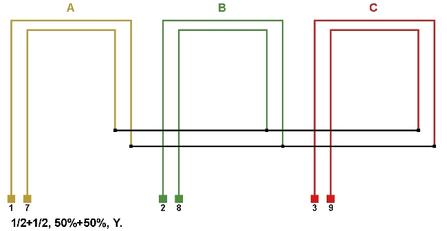
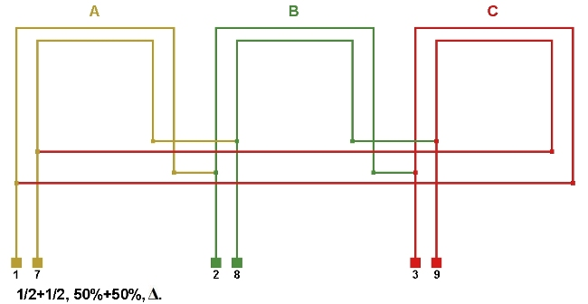
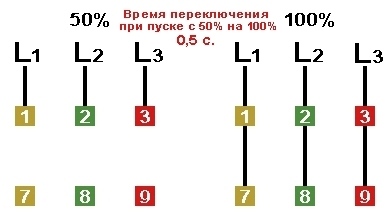
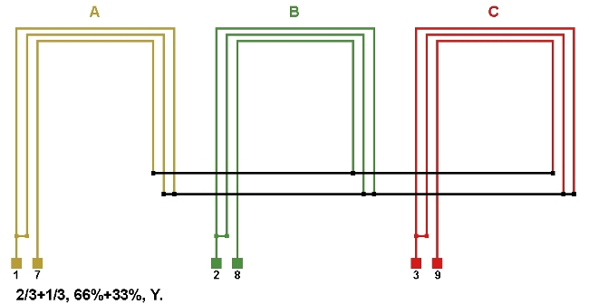
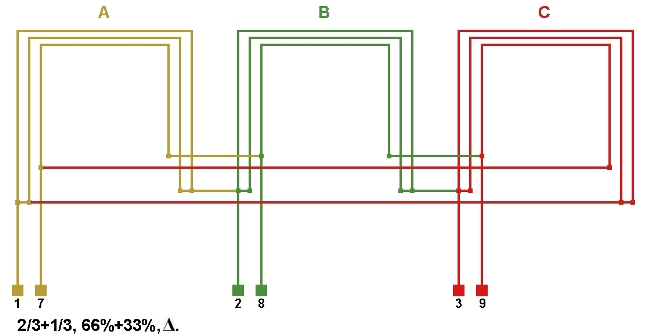
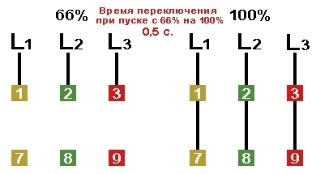
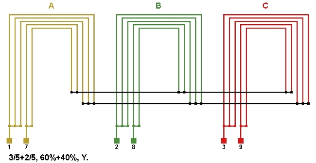
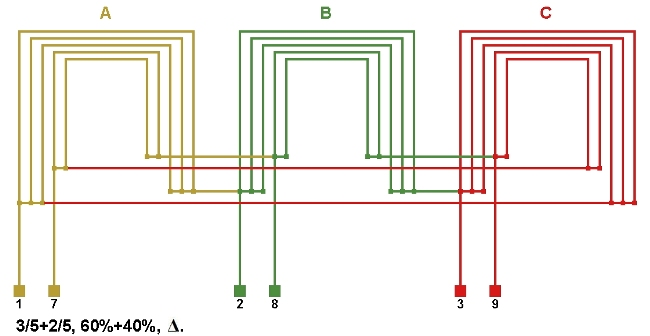
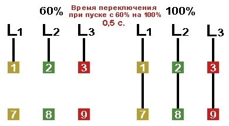

Перейти на главную страницу справочника.
Электродвигатели с разделёнными обмотками.
- Применение в электродвигателе разделённой на две части обмотки позволяет снизить пусковой ток по сравнению с прямым пуском до 65%.
- В таких электродвигателях обмотка разделяется на две части и может иметь или не иметь внутреннее соединение. Разделение обмотки на две части может быть выполнено с помощью параллельных ветвей или параллельных проводников. Вывода обмотки 1 обозначаются цифрами 1 2 3, вывода обмотки 2 обозначаются цифрами 7 8 9. При запуске электродвигателя в первую очередь подаётся напряжение на вывода 1 2 3, а потом и на вывода 7 8 9. Время включения обмотки 2 после обмотки 1 – 0,5 с.
- Значение тока по разделённым обмоткам. Обмотка 1 + Обмотка 2.
1/2+1/2 (50%+50%), 3/5+2/5 (60%+40%), 2/3+1/3 (66%+33%). Если использовать способ разделения обмотки с помощью параллельных проводников, можно подобрать другие значения тока по разделённым обмоткам.
Несколько способов разделения обмотки на две части с различным значением тока с помощью параллельных проводников.
Двигатель с разделёнными обмотками 50%+50%.
- Обмотка выполняется в два провода одинакового сечения. Разделение на две части происходит путём соединения каждого параллельного проводника в свою обмотку. Для повышения надёжности первой обмотки диаметр провода можно взять чуть больше чем диаметр провода второй. Если при расчёте обмотки получился провод 1,00×2, то для первой обмотки можно взять провод 1,04, а для второй 0,96. Изменяя сечение провода в разделённых обмотках, изменяется и процентное соотношение значений тока.


{kind=link}
{kind=link}
- Вместо разделённых обмоток 50%+50% можно применить совмещённую обмотку с параллельным соединением фаз. Для этого вывода звезды и треугольника выводят на клеммную колодку, внутреннего соединения звезды и треугольника в обмотке нет.

- Схема подключения к сети двигателя с разделёнными обмотками 50%+50%.

{kind=link}
Двигатель с разделёнными обмотками 66%+33%.
- Обмотка выполняется в три провода одинакового сечения. Разделение на две части происходит путём соединения двух параллельных проводников в одну обмотку и одного параллельного проводника в другую. С помощью подбора сечения параллельных проводников, возможно выполнить значение тока по разделённым обмоткам 60%+40%.


{kind=link}
{kind=link}
- Схема подключения к сети двигателя с разделёнными обмотками 66%+33%.

{kind=link}
Двигатель с разделёнными обмотками 60%+40%.
- Обмотка выполняется в пять проводов одинакового сечения. Разделение на две части происходит путём соединения трёх параллельных проводников в одну обмотку и двух параллельных проводников в другую. С помощью подбора сечения параллельных проводников, возможно выполнить значение тока по разделённым обмоткам 66%+33%.


{kind=link}
{kind=link}
- Схема подключения к сети двигателя с разделёнными обмотками 60%+40%.

{kind=link}
Схема подключения к сети электродвигателей с разделёнными обмотками.
Ток тепловых реле FP1 и FP2 должен соответствовать значениям тока по разделённым обмоткам, 1/2+1/2 (50%+50%), 3/5+2/5 (60%+40%), 2/3+1/3 (66%+33%).
{kind=link}
Электродвигатели с разделёнными обмотками 25%+25%+50%.
- Обмотка выполняется в четыре провода одинакового сечения. Разделение на две части происходит путём соединения двух параллельных проводников в одну обмотку и двух параллельных проводников в другую, при этом обмотки с началом фаз 1, 2 и 3 делятся на две части путём соединения каждого параллельного проводника в свою обмотку.
{kind=link}
Схема подключения к сети двигателя с разделёнными обмотками 25%+25%+50%.
{kind=link}
Электродвигатели с разделёнными обмотками 33,3%+33,3%+33,3%.
- Обмотка выполняется в три провода одинакового сечения. Разделение на три части происходит путём соединения каждого параллельного проводника в свою обмотку.
{kind=link}
Схема подключения к сети двигателя с разделёнными обмотками 33,3%+33,3%+33,3%.
{kind=link}
03.07.2016 г.